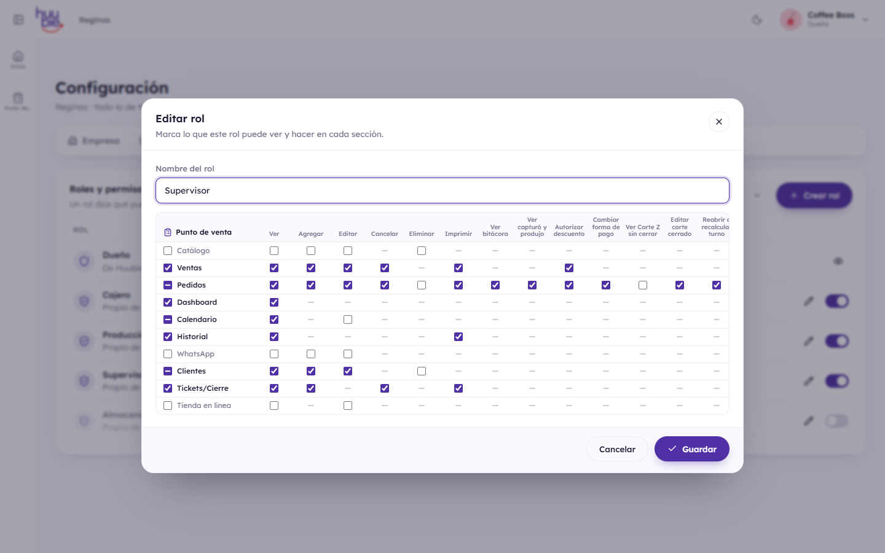
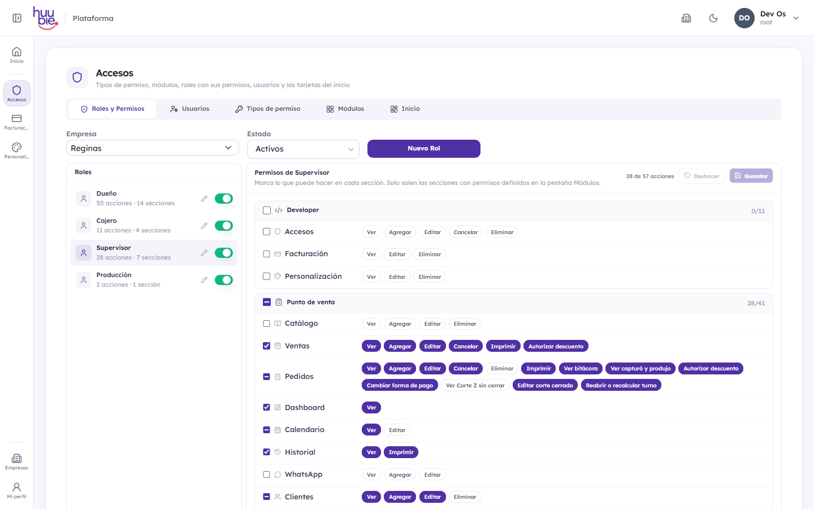
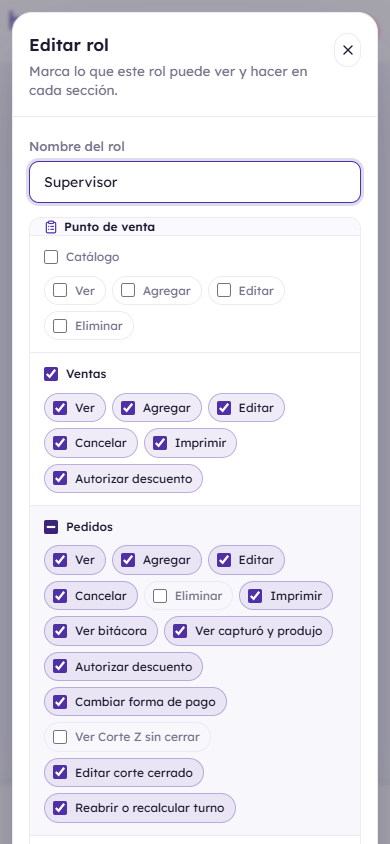
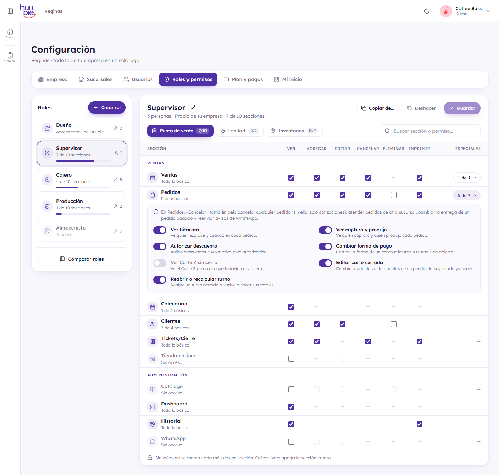
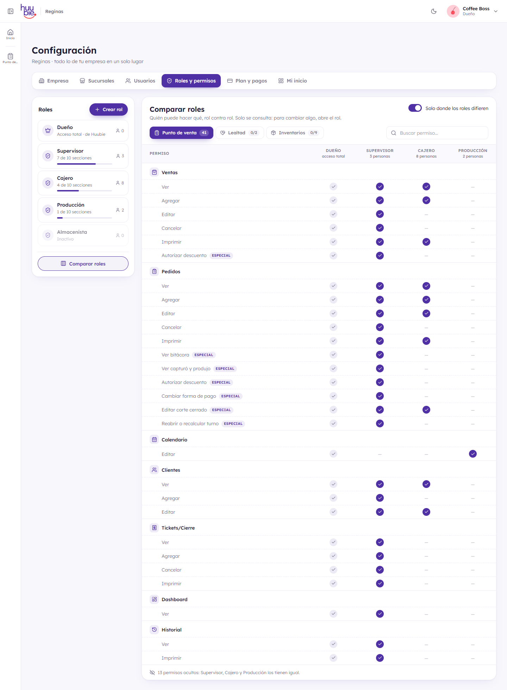
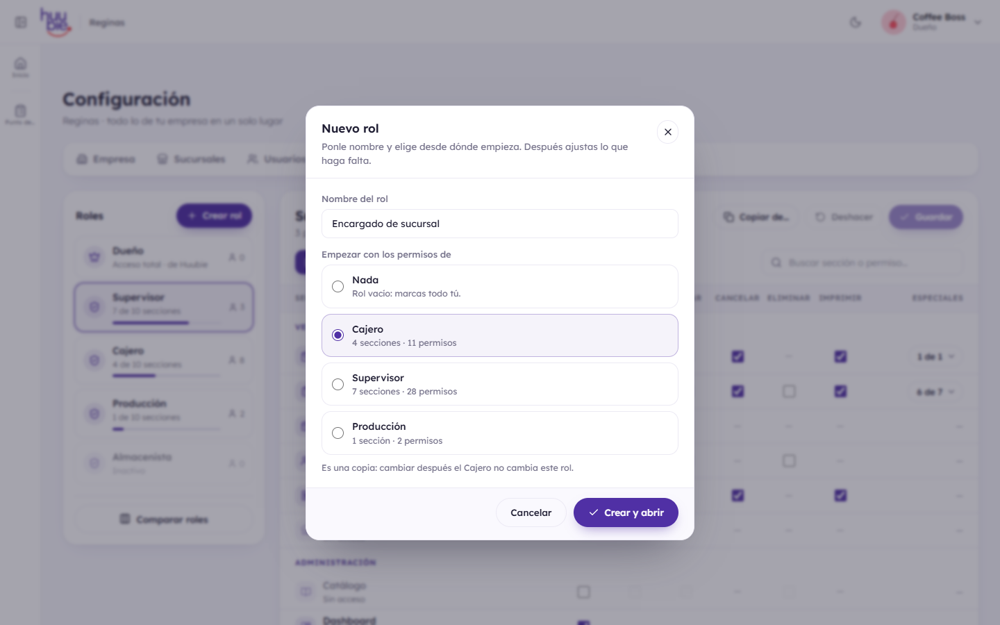
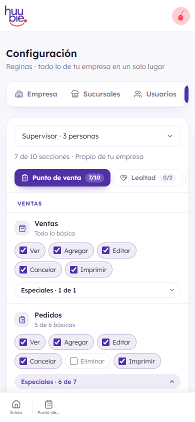
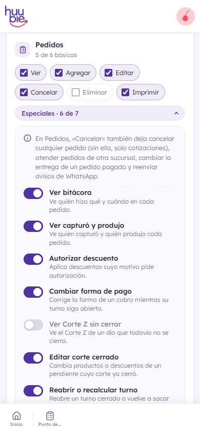

Hoy cada casilla nueva suma una columna a todas las secciones. Pedidos ya trae 13 y la tabla del rol tiene más rayas que casillas. La propuesta separa las 6 acciones de siempre de los permisos especiales de cada sección, explica qué abre cada uno y agrega una vista para comparar roles. Datos de Reginas en la base local.



| # | Problema | Dato | De dónde sale |
|---|---|---|---|
| P1 | Una columna por tipo de permiso. Cada casilla nueva ensancha la tabla de todas las secciones. | 13 columnas hoy. Con las 3 que propone Inventarios (ver-costos, aplicar-ajuste, producir) serían 16. |
ctrl-configuracion.php › permissionTree arma columns con todos los tipos. |
| P2 | Las especiales viven en una sola sección pero ocupan columna en las 10. | 7 de 13 tipos son especiales; 6 existen solo en Pedidos y 1 en Pedidos y Ventas. | type_permissions × permissions, base local. |
| P3 | El nombre no dice todo lo que abre. No hay dónde leer qué hace cada casilla. | «Cancelar» de Pedidos también deja cancelar pedidos que no son cotización, atender otra sucursal, cambiar la entrega de un pagado y reenviar WhatsApp. «Agregar» y «Cancelar» de Ventas mandan en Historial y en Clientes. | core-order.php › foreignRules, ctrl-pedidos.php:525, ctrl-historial.php:306, 889, ctrl-clientes.php:343. type_permissions no tiene descripción. |
| P4 | Para saber quién puede algo hay que abrir rol por rol. | Reginas tiene 4 roles activos y 41 permisos en Punto de venta. | Ni Configuración ni Accesos tienen una vista por permiso. |
| P5 | «Ver» no es requisito. Se puede marcar «Editar» sin «Ver», y con cualquier acción se entra a la sección. | Hoy 0 casos, pero nada lo impide. | _Permission.php › grantedTo no pregunta por show. |
| P6 | Accesos ofrece Developer a roles de empresa. | El Dueño de Reginas (rol 2) tiene 5 permisos ahí (4 en Accesos, 1 en Personalización) que no sirven. | _Permission.php › canSee: Developer es solo de root. |
| P7 | Dos pantallas, dos dibujos. Matriz en un modal (Configuración) y pastillas (Accesos). | El modal mide 980 px y no crece con los módulos. | configuracion.js › cfgRoleForm, accesos.js › Permissions. |
Maqueta pintada dentro de la página real de Configuración (sesión de dueño de Reginas, 1440 px), con los permisos reales de Supervisor, Cajero y Producción. Lealtad e Inventarios salen en las pestañas solo para ver cómo crece: en la pantalla real aparecen únicamente los módulos que la empresa contrató.





| Qué | Antes | Después |
|---|---|---|
| Columnas de la tabla del rol | 13, y crece con cada casilla | 6 fijas |
| Rayas en la tabla de Supervisor | 89 de 130 (68 %) | 27 de 60 (45 %): solo básicas que la sección no tiene |
| Inventarios con sus 3 casillas nuevas | 16 columnas en todas las secciones | 6 columnas; las 3 especiales dentro de sus secciones |
| Saber qué abre una casilla | Solo el nombre | Una línea por especial y nota por sección |
| ¿Quién autoriza descuentos? | Abrir los roles uno por uno | Un renglón en Comparar roles |
| Crear un rol parecido a otro | Vacío: marcar todo a mano | Copia de otro rol |
| Pedidos en celular | 13 pastillas seguidas | 6 pastillas + «Especiales · 6 de 7» plegable |
| Roles de empresa en Accesos | Les ofrece Developer | Solo sus módulos |
Las 6 básicas no necesitan columna nueva: son los code de siempre (show, create,
update, cancel, delete, print) en una constante. Todo tipo que no sea de esos es especial,
también los que se creen después en Accesos › Tipos de permiso.
| Cambio | Dónde | Migración |
|---|---|---|
permissions.description VARCHAR(160) NULL: qué hace ese permiso en esa sección. Con los textos de Pedidos y Ventas. | fayxzvov_app | Sí, antes del código en prod |
El árbol del rol devuelve por sección basic, special y note; sin columns. | ctrl-configuracion.php › permissionTree ctrl-accesos.php › permissionTree | No |
| Al guardar, una acción sin «Ver» en su sección suma «Ver». | ctrl-configuracion.php › saveRole ctrl-accesos.php › syncRolePermissions | No |
Comparar roles: un opc nuevo que lee permissions_roles de los roles de la empresa en una consulta. | ctrl / mdl-configuracion.php | No |
Crear desde otro rol: saveRole acepta from_role y copia sus filas. | ctrl-configuracion.php | No |
| Accesos: sin Developer para roles con empresa. | ctrl-accesos.php › getRolePermissions | No |
| Escribir la descripción de cada permiso: un renglón por permiso en el modal de la sección. | accesos.js › Sections | No |
| Pantalla: lista + editor, especiales plegables, pestañas de módulo, buscador, comparar. | configuracion.js · page.css | No |
| # | Pregunta | Lo que propongo | Por qué importa |
|---|---|---|---|
| 1 | ¿«Cancelar» de Pedidos se parte en especiales con nombre propio (otra sucursal, entrega de pagado, reenviar WhatsApp)? | Todavía no: la nota de la sección lo explica | Partirlo cambia 4 revisiones de cancel en order/ y lleva otra migración. Se puede hacer después sin tocar el diseño. |
| 2 | Los 5 permisos de Developer del Dueño de Reginas (rol 2) | Borrarlos | No dan nada (Developer es solo de root) y confunden al revisar el rol. |
| 3 | ¿Comparar roles deja marcar con clic en la celda? | No, solo consulta | Un solo lugar para guardar. Si se edita ahí, cada clic guarda en otro rol y Deshacer se complica. |
| 4 | ¿Configuración sale del modal y pasa a lista + editor? | Sí | El modal no crece: con Lealtad e Inventarios serían 21 secciones en una caja de 980 px. |
| 5 | ¿Accesos (root) adopta el mismo dibujo? | Sí, en una fase aparte | Accesos carga Bootstrap y CoffeeSoft; no verifiqué que page.css conviva ahí sin que Bootstrap lo pise. |
| Fase | Qué entra | Migración |
|---|---|---|
| F1 | Configuración: lista + editor, 6 columnas, especiales plegables, pestañas de módulo, buscador, «Ver» manda (pantalla y servidor). Accesos sin Developer para roles de empresa. | No |
| F2 | permissions.description con los textos de Pedidos y Ventas; se ven bajo cada especial y como nota. Root los escribe en Accesos › Módulos. | Sí |
| F3 | Comparar roles y Crear desde otro rol. | No |
| F4 | Accesos › Roles y Permisos con el mismo dibujo. | No |